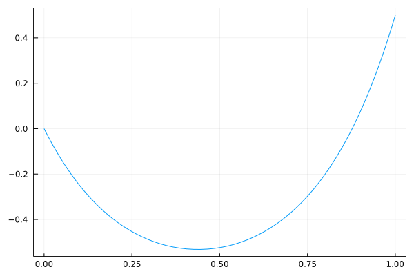

JuMP basics¶
Following from the JuMP tutorials.
This notebook is pending updates.
using JuMP
using GLPK
model = Model(GLPK.Optimizer)
A JuMP Model
Feasibility problem with:
Variables: 0
Model mode: AUTOMATIC
CachingOptimizer state: EMPTY_OPTIMIZER
Solver name: GLPK
@variable(model, 0 <= x <= 2)
@variable(model, 0 <= y <= 30)
\[ y \]
@objective(model, Max, 5x + 3 * y)
\[ 5 x + 3 y \]
@constraint(model, con, 1x + 5y <= 3)
\[con : $ x + 5 y \leq 3.0 $\]
optimize!(model)
termination_status(model)
OPTIMAL::TerminationStatusCode = 1
objective_value(model)
10.6
value(x)
2.0
value(y)
0.2
dual(con)
-0.6
Sudoku¶
x[i,j,k] = 1 iff (i, j) has value k
sudoku = Model(GLPK.Optimizer)
@variable(sudoku, x[i=1:9, j=1:9, k=1:9], Bin)
;
# only one number per cell
for i in 1:9, j in 1:9
@constraint(sudoku, sum(x[i, j, k] for k in 1:9) == 1)
end
for ind = 1:9 # for each row / column
for k = 1:9 # for each digit
@constraint(sudoku, sum(x[ind, j, k] for j in 1:9) == 1) # 1-9 appears once per row
@constraint(sudoku, sum(x[i, ind, k] for i in 1:9) == 1) # per column
end
end
for i = 1:3:7, j = 1:3:7, k = 1:9
# i is top left row, j is top left column
@constraint(sudoku, sum(x[r, c, k] for r in i:i+2, c in j:j+2) == 1)
end
init_sol = [
0 1 0 0 0 2 0 0 8;
7 0 0 1 0 0 0 0 0;
9 0 0 3 0 0 5 6 0;
0 0 0 0 0 8 0 0 0;
0 5 0 0 0 0 0 3 0;
2 0 0 7 0 0 1 9 0;
0 0 0 0 0 0 0 0 4;
0 0 0 6 4 9 0 5 0;
5 0 0 0 0 0 0 0 3
]
# insert initial conditions into model
for i in 1:9, j in 1:9
if init_sol[i, j] != 0
@constraint(sudoku, x[i, j, init_sol[i, j]] == 1)
end
end
optimize!(sudoku)
xval = value.(x)
sol = zeros(Int, 9, 9)
for i in 1:9, j in 1:9, k in 1:9
if round(Int, xval[i, j, k]) == 1
sol[i, j] = k
end
end
sol
9×9 Matrix{Int64}:
4 1 5 9 6 2 3 7 8
7 6 3 1 8 5 4 2 9
9 2 8 3 7 4 5 6 1
3 9 6 2 1 8 7 4 5
1 5 7 4 9 6 8 3 2
2 8 4 7 5 3 1 9 6
6 7 2 5 3 1 9 8 4
8 3 1 6 4 9 2 5 7
5 4 9 8 2 7 6 1 3
Passport¶
using CSV, DataFrames, HTTP
dataurl = "https://raw.githubusercontent.com/jump-dev/JuMPTutorials.jl/master/notebook/using_JuMP/data/passport-index-matrix.csv"
ppdata = CSV.File(HTTP.get(dataurl).body) |> DataFrame
size(ppdata)
(199, 200)
3 = free travel
2 = eTA required
1 = visa obtained on arrival
0 = visa required
-1 is passport and dest is the same
ppdata[1:10, :]
| Passport | Afghanistan | Albania | Algeria | Andorra | Angola | Antigua and Barbuda | |
|---|---|---|---|---|---|---|---|
| String | Int64 | Int64 | Int64 | Int64 | Int64 | Int64 | |
| 1 | Afghanistan | -1 | 0 | 0 | 0 | 0 | 0 |
| 2 | Albania | 0 | -1 | 0 | 3 | 0 | 3 |
| 3 | Algeria | 0 | 0 | -1 | 0 | 1 | 0 |
| 4 | Andorra | 0 | 3 | 0 | -1 | 0 | 3 |
| 5 | Angola | 0 | 0 | 0 | 0 | -1 | 0 |
| 6 | Antigua and Barbuda | 0 | 3 | 0 | 3 | 0 | -1 |
| 7 | Argentina | 0 | 3 | 0 | 3 | 1 | 3 |
| 8 | Armenia | 0 | 3 | 0 | 0 | 0 | 3 |
| 9 | Australia | 0 | 3 | 0 | 3 | 1 | 3 |
| 10 | Austria | 0 | 3 | 0 | 3 | 1 | 3 |
Find the minimum number of passports required to visit every country without requiring a visa: interested in -1, and 3 cases.
@. ppdata[:, 2:end] = ifelse(
(ppdata[:, 2:end] == -1) | (ppdata[:, 2:end] == 3), # brackets required for |
1, 0
)
ppdata[1:10, :]
| Passport | Afghanistan | Albania | Algeria | Andorra | Angola | Antigua and Barbuda | |
|---|---|---|---|---|---|---|---|
| String | Int64 | Int64 | Int64 | Int64 | Int64 | Int64 | |
| 1 | Afghanistan | 1 | 0 | 0 | 0 | 0 | 0 |
| 2 | Albania | 0 | 1 | 0 | 1 | 0 | 1 |
| 3 | Algeria | 0 | 0 | 1 | 0 | 0 | 0 |
| 4 | Andorra | 0 | 1 | 0 | 1 | 0 | 1 |
| 5 | Angola | 0 | 0 | 0 | 0 | 1 | 0 |
| 6 | Antigua and Barbuda | 0 | 1 | 0 | 1 | 0 | 1 |
| 7 | Argentina | 0 | 1 | 0 | 1 | 0 | 1 |
| 8 | Armenia | 0 | 1 | 0 | 0 | 0 | 1 |
| 9 | Australia | 0 | 1 | 0 | 1 | 0 | 1 |
| 10 | Austria | 0 | 1 | 0 | 1 | 0 | 1 |
n = ncol(ppdata) - 1 # subtract one for col with names
ppmodel = Model(GLPK.Optimizer)
@variable(ppmodel, pass[1:n], Bin)
@constraint(ppmodel, [j in 2:n], sum(ppdata[i, j] * pass[i] for i in 1:n) >= 1) # forall j
@objective(ppmodel, Min, sum(pass))
optimize!(ppmodel)
println("Min. number passports needed = ", objective_value(ppmodel))
Min. number passports needed = 23.0
country_index = findall(value.(pass) .== 1)
println("Countries:")
for i in country_index
pp = names(ppdata)[i+1]
println("- ", pp)
end
Countries:
- Afghanistan
- Angola
- Australia
- Austria
- Comoros
- Congo
- Eritrea
- Gambia
- Georgia
- Hong Kong
- India
- Iraq
- Kenya
- Madagascar
- Maldives
- North Korea
- Papua New Guinea
- Singapore
- Somalia
- Sri Lanka
- Tunisia
- United Arab Emirates
- United States
Catenary¶
using Ipopt
catmodel = Model(Ipopt.Optimizer)
set_silent(catmodel)
N = 100 # number of links
L = 1 # distance between endpoints
lᵢ = 2*L / N
@variable(catmodel, x[1:N])
@variable(catmodel, y[1:N])
# min potential energy
@objective(catmodel, Min, sum((y[j-1] + y[j])/2 for j=2:N))
@constraints(catmodel, begin
x[1] == 0
x[N] == L
y[1] == 0
y[N] == L/2
end
)
@NLconstraint(
catmodel, [j in 2:N], (x[j] - x[j-1])^2 + (y[j] - y[j-1])^2 <= lᵢ^2
)
catmodel
A JuMP Model
Minimization problem with:
Variables: 200
Objective function type: AffExpr
`AffExpr`-in-`MathOptInterface.EqualTo{Float64}`: 4 constraints
Nonlinear: 99 constraints
Model mode: AUTOMATIC
CachingOptimizer state: EMPTY_OPTIMIZER
Solver name: Ipopt
Names registered in the model: x, y
optimize!(catmodel)
xvals = value.(x)
yvals = value.(y)
using Plots
plot(xvals, yvals, legend=false)
